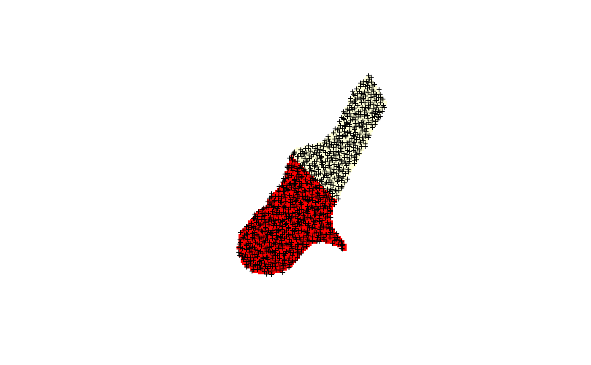
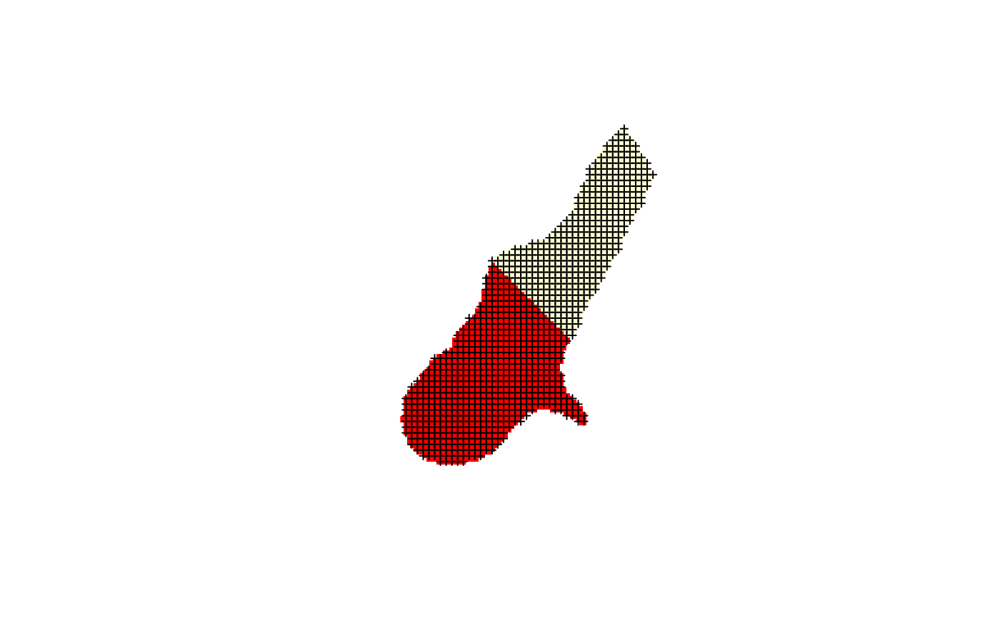

spsample.Rdsample point locations within a square area, a grid, a polygon, or on a spatial line, using regular or random sampling methods; the methods used assume that the geometry used is not spherical, so objects should be in planar coordinates
spsample(x, n, type, ...) makegrid(x, n = 10000, nsig = 2, cellsize, offset = rep(0.5, nrow(bb)), pretty = TRUE)
| x | Spatial object; |
|---|---|
| ... | optional arguments, passed to the appropriate |
| n | (approximate) sample size |
| type | character; |
| bb | bounding box of the sampled domain; setting this to a smaller value leads to sub-region sampling |
| offset | for square cell-based sampling types (regular, stratified,
nonaligned, hexagonal): the offset (position) of the regular
grid; the default for |
| cellsize | if missing, a cell size is derived from the sample size
|
| nsig | for "pretty" cell size; |
| pretty | logical; if |
an object of class SpatialPoints-class. The number of
points is only guaranteed to equal n when sampling is done in a
square box, i.e. (sample.Spatial). Otherwise, the obtained number
of points will have expected value n.
When x is of a class deriving from Spatial-class for which
no spsample-methods exists, sampling is done in the bounding box
of the object, using spsample.Spatial. An overlay using
over may be necessary to select the features inside the geometry
afterwards.
Sampling type "nonaligned" is not implemented for line objects.
Some methods may return NULL if no points could be successfully placed.
makegrid makes a regular grid that covers x; when
cellsize is not given it derives one from the number of grid
points requested (approximating the number of cells). It tries to
choose pretty cell size and grid coordinates.
sample in the bbox of x
sample on a line
sample in a Polygon
sample in a Polygons object, consisting of possibly
multiple Polygon objects (holes must be correctly defined, use checkPolygonsHoles if need be)
sample in an SpatialPolygons object; sampling
takes place over all Polygons objects present, use subsetting to vary
sampling intensity (density); holes must be correctly defined, use checkPolygonsHoles if need be
sample in an SpatialGrid object
sample in an SpatialPixels object
If an Polygon-class object has zero area (i.e. is a line), samples on this line element are returned. If the area is very close to zero, the algorithm taken here (generating points in a square area, selecting those inside the polygon) may be very resource intensive. When numbers of points per polygon are small and type="random", the number searched for is inflated to ensure hits, and the points returned sampled among these.
The following two arguments can be further specified:
nclusters Number of clusters (strata) to sample from.
iter(default = 4) number of times to try to place sample points
in a polygon before giving up and returning NULL - this may occur when
trying to hit a small and awkwardly shaped polygon in a large bounding
box with a small number of points
Chapter 3 in B.D. Ripley, 1981. Spatial Statistics, Wiley
Fibonacci sampling: Alvaro Gonzalez, 2010. Measurement of Areas on a Sphere Using Fibonacci and Latitude-Longitude Lattices. Mathematical Geosciences 42(1), p. 49-64
data(meuse.riv) meuse.sr = SpatialPolygons(list(Polygons(list(Polygon(meuse.riv)), "x"))) plot(meuse.sr)plot(meuse.sr)plot(meuse.sr)plot(meuse.sr)plot(meuse.sr)image(meuse.grid)image(meuse.grid)image(meuse.grid)